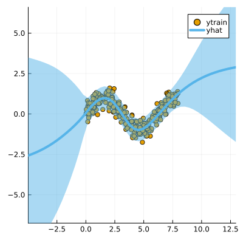

Data
We first generate some synthetic data:
using LaplaceRedux.Data
n = 300 # number of observations
σtrue = 0.30 # true observational noise
x, y = Data.toy_data_regression(n;noise=σtrue)
xs = [[x] for x in x]
X = permutedims(x)MLP
We set up a model and loss with weight regularization:
data = zip(xs,y)
n_hidden = 50
D = size(X,1)
nn = Chain(
Dense(D, n_hidden, tanh),
Dense(n_hidden, 1)
)
loss(x, y) = Flux.Losses.mse(nn(x), y)We train the model:
using Flux.Optimise: update!, Adam
opt = Adam(1e-3)
epochs = 1000
avg_loss(data) = mean(map(d -> loss(d[1],d[2]), data))
show_every = epochs/10
for epoch = 1:epochs
for d in data
gs = gradient(Flux.params(nn)) do
l = loss(d...)
end
update!(opt, Flux.params(nn), gs)
end
if epoch % show_every == 0
println("Epoch " * string(epoch))
@show avg_loss(data)
end
endLaplace Approximation
Laplace approximation can be implemented as follows:
subset_w = :all
la = Laplace(nn; likelihood=:regression, subset_of_weights=subset_w)
fit!(la, data)
plot(la, X, y; zoom=-5, size=(400,400))Next we optimize the prior precision $P_0$ and and observational noise $\sigma$ using Empirical Bayes:
optimize_prior!(la; verbose=true)
plot(la, X, y; zoom=-5, size=(400,400))loss(exp.(logP₀), exp.(logσ)) = 124.30892828437838
Log likelihood: -92.90051444935894
Log det ratio: 40.658383861905975
Scatter: 22.15844380813291
loss(exp.(logP₀), exp.(logσ)) = 130.81658756749727
Log likelihood: -102.38911604652068
Log det ratio: 45.69949273706189
Scatter: 11.155450304891295
loss(exp.(logP₀), exp.(logσ)) = 117.38076793615893
Log likelihood: -89.25592255384686
Log det ratio: 48.59462871227015
Scatter: 7.655062052354006
loss(exp.(logP₀), exp.(logσ)) = 114.88202732095019
Log likelihood: -86.70548060362589
Log det ratio: 49.71436271446572
Scatter: 6.638730720182862
loss(exp.(logP₀), exp.(logσ)) = 115.26415029719183
Log likelihood: -87.08424763856297
Log det ratio: 49.75555914247877
Scatter: 6.60424617477896
loss(exp.(logP₀), exp.(logσ)) = 114.61842761360316
Log likelihood: -86.46860147471742
Log det ratio: 49.32651563215006
Scatter: 6.973136645621423
loss(exp.(logP₀), exp.(logσ)) = 114.39008804031867
Log likelihood: -86.26082328115449
Log det ratio: 48.8367441519502
Scatter: 7.421785366378184
loss(exp.(logP₀), exp.(logσ)) = 114.38876489620353
Log likelihood: -86.26458532181827
Log det ratio: 48.49569624521385
Scatter: 7.752662903556662
loss(exp.(logP₀), exp.(logσ)) = 114.3921409222427
Log likelihood: -86.26770107709343
Log det ratio: 48.349001843084864
Scatter: 7.899877847213686
loss(exp.(logP₀), exp.(logσ)) = 114.38668455910438
Log likelihood: -86.26219437624869
Log det ratio: 48.34197553950503
Scatter: 7.907004826206364